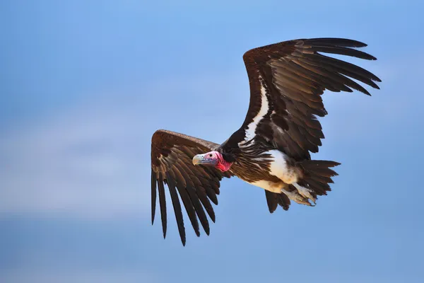

Catárdidos
Los Catárdidos (Cathartidae, proveninete del vocabulario griego 'kathartes' que significa los que limpian) son unas familia de aves del orden Cathartiformes, estas son conocidas vulgarmente como buitres del Nuevo Mundo o buitres americanos. Se alimentan de carroña, a veces de pequeños animales vives y de vegetables No están directamente emparentados con los buitres del Viejo Mundo, también carroñeros, aunque se parecen mucho debido a la evolución convergente. Los urubús, auras o zopilotes, nombres comunes del género Cathartes figuran entre las muy pocas aves con un buen sentido del olfato. Las auras o zopilotes del Género Cathartes, figuran entre las muy pocas aves con un buen sentido del olfato.

Los buitres del Nuevo Mundo suelen ser grandes, y su longitud varía
desde el buitre menor de cabeza amarilla, con 56-61 centímetros
(22-24 pulgadas), hasta los cóndores de California y de los Andes,
que pueden alcanzar los 120 centímetros (48 pulgadas) de longitud
y pesar 12 o más kilogramos (26 o más libras). El plumaje es predominantemente
negro o marrón, y a veces está marcado con blanco. Todas las especies tienen
la cabeza y el cuello sin plumas. En algunos, esta piel es de colores brillantes,
y en el buitre real se desarrolla en barbas y excrecencias de colores.
Todos los buitres del Nuevo Mundo tienen alas largas y anchas y una cola rígida,
adecuada para volar. Son las mejor adaptadas para volar de todas las aves terrestres.
Las patas tienen garras pero son débiles y no están adaptadas para agarrar.
Los dedos delanteros son largos con pequeñas ramificaciones en sus bases.
Ningún buitre del Nuevo Mundo posee siringe, el órgano vocal de las aves.
Por lo tanto, la voz se limita a gruñidos y siseos poco frecuentes.
El pico es ligeramente ganchudo y es relativamente débil en comparación
con los de otras aves de presa. Esto se debe a que está adaptado para desgarrar
la carne débil de la carroña parcialmente podrida, en lugar de la carne fresca.
Las fosas nasales son ovaladas y están situadas en una suave base o ceroma.
El conducto nasal está abierto, no está dividido por un septum, por lo que al mirar
desde un lado la cabeza, se puede ver a través del pico. Los ojos son prominentes y,
a diferencia de los de las águilas, los halcones y los gavilanes, no están sombreados
por un hueso de la ceja. Los miembros de Coragyps y Cathartes tienen una sola fila
incompleta de pestañas en el párpado superior y dos filas en el párpado inferior,
mientras que Gymnogyps, Vultur y Sarcoramphus carecen totalmente de pestañas.
Los buitres del Nuevo Mundo tienen el inusual hábito de la urohidrosis,
o de defecar sobre sus patas para enfriarlas por refrigeración evaporativa.
Como este comportamiento también está presente en las cigüeñas, es uno de los
argumentos para una estrecha relación entre ambos grupos.